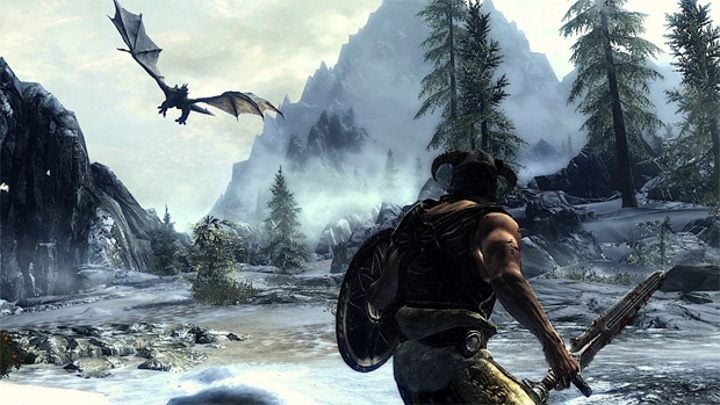
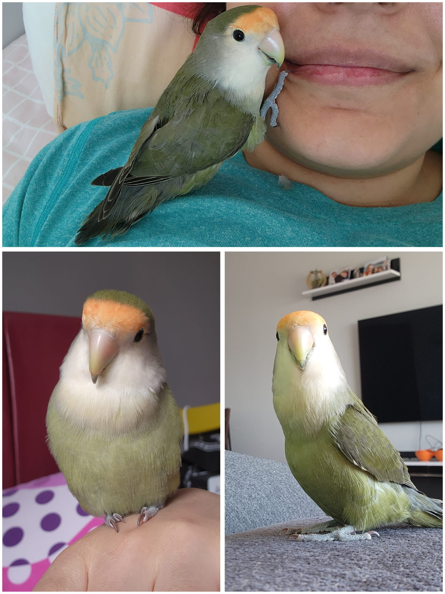

EN VAZGEÇİLMEZ İLGİ ALANIM: VİDEO OYUNLARI
HOBİ VE İLGİ ALANLARIM
Video Oyunları
İlk sıraya yazmazsam olmaz... Bölümümdeki çoğu arkadaşım gibi ben de video oyunu oynarım. Ve yine birçok arkadaşım gibi, oyun oynamak hobiden çok bağımlılık seviyesine gelmiş olabilir...
Oyun sevdam, henüz okuma yazma bilmiyorken babamın korsan CD'sini eve getirdiği, 2001 yılında çıkan Stronghold Crusader ile başladı. Evdeki tüplü monitörün karşısında saatlerce oturup bu oyunu oynar, her on dakikada bir koşarak babamı çağırıp yaptığım kalelere bakması için yalvarırdım. Bu gün hala zaman buldukça babamla oyuna girip kapıştığımız doğrudur. E tabi boynuz kulağı geçti, bir zamanlar bana oyunu anlatan canım babacığım artık kızına ayak uyduramıyor.

Son yıllarda ise en sevdiğim oyun türü hikaye bazlı oyunlardır. En fazla oyun saatimin olduğu oyun ise açık ara farkla The Elder Scrolls V: Skyrim'dir. Son 6 senedir aç ve susuz kalmış gibi Todd Howard'dan 6. oyun ile alakalı haber beklemekteyim. Bu garibanın yüzünü güldür be Todd... 
Bethesda Stüdyoları CEO'SU
Skyrim ile başlayan hikaye bazlı oyun yolculuğum hala devam etmekte. En son takıklığım Red Dead Redemption II üzerineydi. Objektif olarak gelmiş geçmiş en iyi oyun karakteri olan Arthur Morgan'a ağladığım kadar başka hiçbir şeye ağladığımı sanmıyorum. Kalbimizdesiniz Mr. Morgan.

Hayvanlar
Hayvanlar enteresan bir hobi gibi gelmiş olabilir. Ancak kendimle ilgili bir site hazırlayıp, gönlümün efendisi ve gözümün bebeğinden bahsetmemem mümkün değil! Fark etmediyseniz diye söyleyeyim, evet, arkadaş grubunda evcil hayvanını bütün karakteri haline getiren o enteresan insanın ta kendisiyim. Ve konuyla alakalı hiç utanmam yok!
İçimdeki hayvan sevdalısı aile evinden çıkınca ilk fırsatta evcil hayvan arayışına başladı. Muhabbet kuşu almak için girdiğim evcil hayvan dükkanında, "Muhabbet kuşum yok ama sevda papağanı verebilirim" diyen esnaf abime burdan şükranlarımı sunarım. 
Kitap Okumak
Burada çok açıklamaya ihtiyaç olmasa gerek. Roman okumayı çok severim. Hatta öyle severim ki bir kitaba başladığımda, o kitap bitene kadar yemeden
içmeden kesilme gibi kötü bir huyum vardır. Lise yıllarımda hikaye yazma deneyimi de edindim. Wattpad denilen o saçma uygulamada sağlam bir okuyucu kitlem vardı.
E tabii bu tecrübemi iyiye kullandım. 2016'da, Darüşşafaka'nın düzenlediği Sait Faik Hikaye Armağanı yarışmasında finalist olmuştum. Çıkardıkları kitapçıkta
hikayem basılmıştı. Fotoğrafını eklerdim lakin kitapçık annem tarafından saklanmakta. Konumu hakkında en ufak bir fikrim yok.